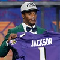
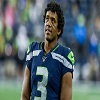
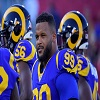
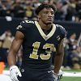
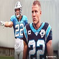
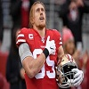
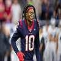
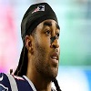
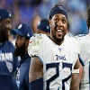

|  |  |  |  |  |  |  |  |  |
Brady jugó al fútbol americano universitario cuatro años en los Michigan Wolverines luego fue contratado por New England Patriots. Tras un año como suplente, se hizo con el puesto de titular en 2001.
A partir de ahí llevó a los Patriots a ganar seis títulos de Super Bowl, nueve títulos de la American Football Conference y diecisiete de la AFC Este, todo ello bajo el mando de Bill Belichick como entrenador jefe.
Ganador además de sus seis anillos de campeón de la Super Bowl, Brady ha sido MVP de la NFL en tres ocasiones y MVP de la Super Bowl en cuatro. También ha sido seleccionado catorce veces para el Pro Bowl y cinco veces para los equipos All-Pro (tres en el primero y dos en el segundo). También es el quarterback que más partidos ha ganado en la historia de la NFL, siendo el único que ha superado las 200 victorias.